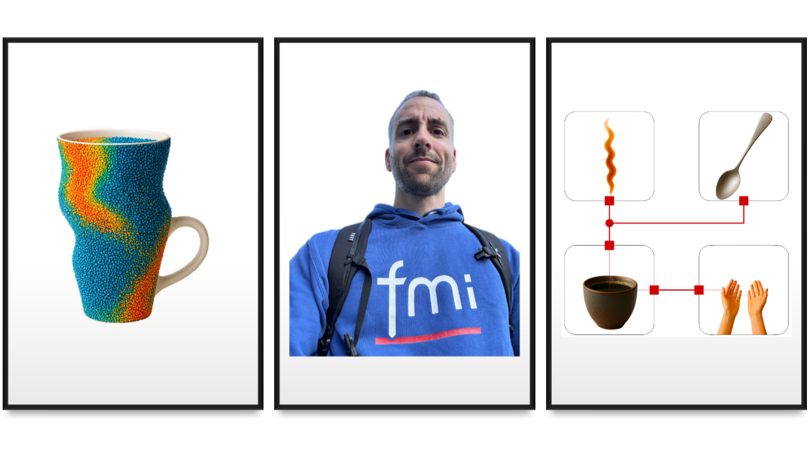
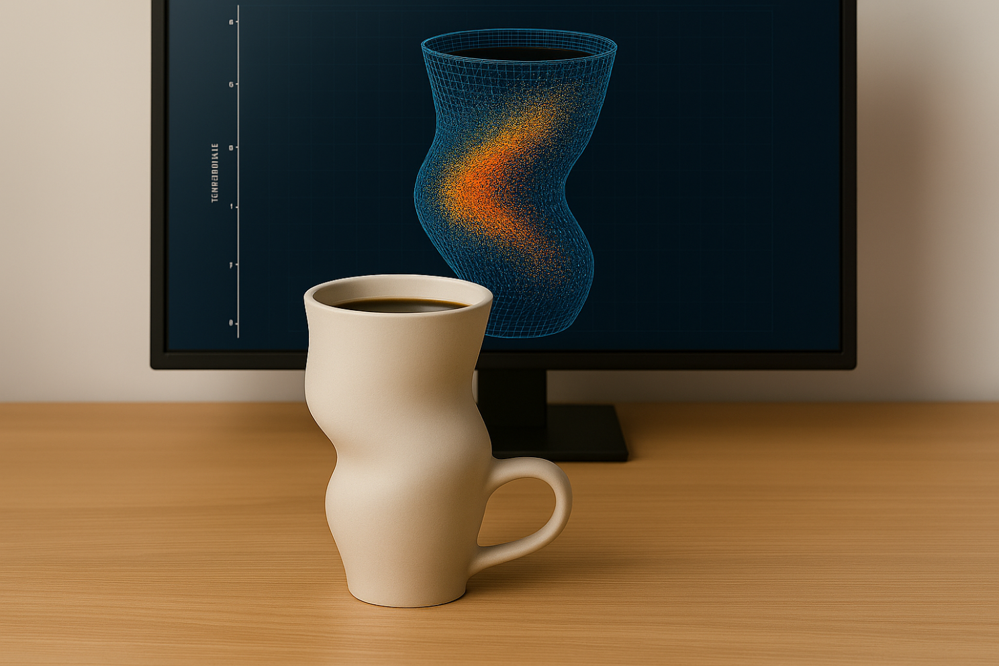
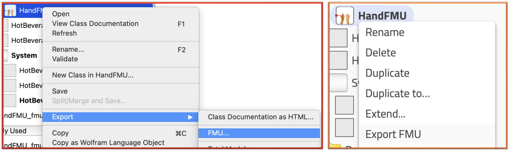

Spreading the word with FMI

(4/4) This is the last of a series of four connected articles. (Read the first and second and third article, if you missed them.)
I hope you’ve got your preferred drink in hand ☕️🫖💧 The promise is that you should be done with this article before the end of your drink.
Let’s look backward for a minute. So far, we did a couple of things: - We modeled our system, taking into account our goal (what we want to achieve with the model) and we took a special care at matching physical interfaces with our model. - Then we simulated our model and did some experiments (like changing the material or volume of the cup). - Finally, we restructured our model to make each component its own model and so we could easily, with the proper interfaces, exchange boundary conditions (hands instead of air or adding a teaspoon in our beverage).
We did not stay in one single tool. We used both Modelon Impact and Wolfram System Modeler. This was to highlight one of the value of Modelica: you are not locked in a single software.
However, one could argue that we are still locked within the Modelica ecosystem. Fair enough! FMI solves this issue. Let’s discuss that today.
Liberating your model
If you haven’t already, you’ll hear (or read) me say it a lot:
You can do everything with any tool, it is just a question of time, effort and money.
I actually believe that! And that’s because I have used many different tools in the last 15years. They all have their pros and cons, and I understand when someone is a fan of their tool.
I actually keep developing similar models or workflows in different tools, searching for better performances, a specific additional capability or just because some colleagues are using this tool and not the other. I don’t have to do this, yet it also keeps me up to date and critical on each tool or language.
Why we don’t have to redevelop models, e.g. when colleagues use a different software? Because there is a much better way. You can export your model using the FMI standard and import it in the other tool!
Will your tool support FMI? Very likely! Check it out by yourself here. At the moment, more than 250 tools support the FMI standard!
So my summary-promise of the FMI is simple: develop your model in your favorite tool and use it “anywhere” (well within the >250 tools).
An overview of FMI
The Functional Mock-up Interface (FMI) is a standard that defines how to package a model and how to define its interfaces so that the model can be reused in a different tool or environment. A model exported based on the FMI standard is called an FMU (Functional Mock-up Unit).
FMI does not care about the level of fidelity of your model or the technology behind it. So you can export a Computational Fluid Dynamics model or Finite Element or a behavioral (0D/1D) model, like we do here with Modelica. And independently from that your tool, if it supports the FMI standard, can leverage this FMU!
“Wait! But it takes different numerical technologies to solve a Modelica or CFD model?” - I hear you and you are correct. FMI allows for exporting your model in three different manners: 1. Model Exchange: the model is exposed in such a way that the tool that imports the FMU would solve it, within the rest of the model, potentially developed within the tool. 2. Co-simulation: the model includes its solver so that the tool that imports the FMU only has to communicate with it the inputs and outputs. 3. Scheduled execution: taking a shortcut here, it is similar to a model exchange format and additionally allows the importer tool to control the model scheduler.
So typically, if you have a CFD model that you want to interface with a Modelica model, it might be very appropriate to use a co-simulation FMU, so that the specific solver would be embedded in the FMU.
On the other side, if you want to interface two similar models, e.g. two Modelica models with similar dynamics, Model Exchange might be the way to go!
Check here to know more about FMI, my thoughts and some lessons learned. And the comments are also insightful!
Your custom beverage and custom mug…
The other day, I got the following comment: “This is my mug. Does your model still apply?”

🤯🫣… my answer was: “Yes, if you can compute the area of exchange and the inner volume and… Wait, if you have a CFD model of it, as your screen shows, just share it with me as an FMU and I’ll simulate the rest!”
Well well, I lied… this cup does not exist. Anyone knows that an engineer desk NEVER looks that clean… Doh! But HYPOTHETICALLY, this could have happened and we could have had done that. (And yes, the CFD model is wrong, but not everyone would know that 😉.)
For the sake of this article, I will just prepare the hand model for FMI export. 🙂
Sharing a hand
I need to speed up here. So you’ll have some homework reading the Bonus section and we will get more in a further article, in the near future. No coffee cup, I promise!
So now we want to share a hand, or rather the hands model. FMI uses causal interfaces.
You might remember that Modelica is acausal and thus wonder why FMI is causal. Well, the point it to have a standard compatible with most tools and most current tools or languages are causal. So we need to define causal interfaces to a Modelica model to export it.
The thermal connector we used for the hand model includes two variables: a temperature (in Kelvin - always SI units!) and a heat flow rate (in Watt). We now need to decide what will be the input and the output of our model. This should be done carefully because we can get issues if wrongly done. Our hand model was simply a conduction and a temperature source, remember? Let’s pause here for a second.
Imagine we would had neglected the conduction and just have the temperature source. Then this temperature shall be the output of the model. If it would be the input and then the hand model would not be able to tell you what the flow is. The hand model would only tell you the temperature. And on top of that, the input temperature might be different than the one of the hand, which would be again wrong. So, double wrong. Don’t do that.
Back on track: we have a conduction and a temperature source. This gives us a bit of freedom. If we chose to have the temperature as input, then the heat flow would be computed from the temperature difference. And if we chose to have the heat flow as an input, then the output temperature could be easily computed based on the increment that the flow induces through the conduction.
Now, we have to think about the interfaces on the other side too and, I will shorten the talk here (because your drink is almost over most likely) and just say that we add a thermal capacity on the mug wall, so that the temperature is the preferred output of the capacity, hence the preferred input to the hand model.

Exporting the model as an FMU is as easy as a right click in most tools. Below it is shown for both Wolfram System Modeler and Modelon Impact. Then usually you have to select the type of export and here we chose Model Exchange because we know the dynamics are similar and we want to leverage a single solver for the entire model with the FMU.
 Once the FMU is created, it can be easily imported and interfaced with causal sources and sensors to the rest of the model, as shown below. The simulation runs fine 😊

The END for today
Enough for today!
We have shown that a model can be exported as an FMU and shared (with a different tool that potentially deals with very different model type). This exemple was however a bit underwhelming as we simply reimported it in our Modelica tool. Yet it showed the work that needs to be done to prepare the model export and later import. We will cover more complex use cases in the future.
Next time - I promise - no more coffee mug! I won’t give a spoiler though.
Break is over, go back to what you were doing.
Clément
Next ->
Bonus for fast learners
© 2025 Clément Coïc — Licensed under creative commons 4.0. Non-commercial use only.